-
足球运动员移动热力图 来自 FIFA
热力图覆盖层放置在一个运动场的图像上，可视化足球运动员在FIFA游戏统计的移动情况。
-
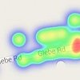
实时GPS可视化 来自 鲍里斯·阿德里恩博士
接收来自Node-RED的实时更新的地理空间热图，以便可视化GPS位置
地理空间热力图接收来自Node-RED的实时更新数据来可视化GPS位置。
-
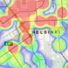
HSL出行热力图 来自 诺·凯库科恩
地理空间热力图可以看出赫尔辛基每个公交站的出发次数。(
了解更多)
-
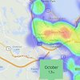
犯罪热力图 来自 大卫HAMP-贡萨尔维斯
动画地理空间热力图可视化犯罪事件密度随时间变化
-
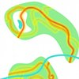
森林地图 来自 弗莱堡大学
Heatmap.js热力图可视化森林利用率的地图层。
-
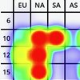
响应式DX聚类 来自 托比亚斯·韦尼茨
利用热力图可视化带状活动。
-
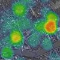
自行车在哪里？ 来自 巴波罗·塞米纳洛
一个热图，实时显示了自行车在法国南特的自行车共享系统中的分布情况。
-
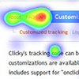
Heatmap 网站分析 来自 getclicky网站
在getclicky中用户鼠标点击和移动热图，使用heatmap.js完成。
-
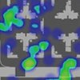
社交俱乐部赛事统计 来自 Rockstar游戏
Max Payne 3游戏地图的热图叠加表示闪点和瓶颈。
-
键盘热力图 来自 帕特里克·韦德
实时键盘热图显示文本的字符分布
-
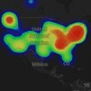
生活中的一天 来自 阿拉斯泰尔·库特
《纽约时报》生活中的一整天的全屏leaflet热力图层动画
-
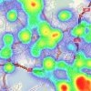
在FI影响下的驾驶行为 来自 亚诺·马特勒
2012年芬兰在事件影响下行驶情况的热力图覆盖层。
-
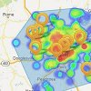
当前附近 来自 巴里·哈克尼斯
谷歌热力图层，显示你周围服务的实时数据。
-
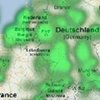
绿色世界 来自 Triposo网站
主要是绿色的热图，显示了世界上爱尔兰酒吧的分布情况。
-
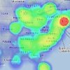
早上好 & FU 推特地图
密度热力图，显示推特关键字随时间推移的频率变化。